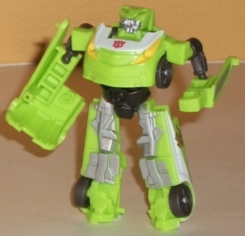

Offroad
Skids & Rally Mudflap [Target Exclusive]
Offroad
Skids & Rally Mudflap [Target Exclusive]
Set Price
: $10 (U.S.)
Overall Rating
: 6.6
Autobot
Skids (Offroad)

Allegiance
: Autobot
Size
: Legend
Difficulty of Transformation
: Very
Easy
Color Scheme
: Light lime green,
silver, white, dull gray, and some dark red, bright yellow, dull metallic
bronze, and dull metallic gunmetal gray
Individual Rating
: 6.5
(NOTE: Because this is a repaint, this is
not a full-blown review. This mainly covers any changes made to the mold
and the color scheme, and merely compares it to the original RotF Legends
class Skids. For a review on the mold itself, read the review of the original
RotF Legends class Skids
here
.)
Offroad Skids trades
his slightly darker green for a more lime-green coloration this time around,
which increases the contrast between that and the dark gray, and looks
quite a bit better overall, in my opinion. The white stripes in vehicle
mode are also a welcome addition, and look great. The silver on the windows
and on the robot legs also looks pretty decent as well-- providing some
contrast, though perhaps giving a darker shade of the color a BIT more
of a presence might've looked a tad better. The other, less prevalent paint
apps-- like the red taillights, yellow headlights, and bronze Cyberglyph
markings on the car doors-- all do an excellent job of accenting the color
scheme, particularly the latter. Another bonus is that Offroad Skids has
pretty much every necessary detail painted in, with the exception of his
front grill.
No mold changes have
been made to Offroad Skids.
Offroad Skids Tech Specs
:
Strength: 4.0
Intelligence: 6.0
Speed: 7.0
Endurance: 4.0
Rank: 2.0
Courage: 8.0
Fireblast: 5.0
Skill: 3.0
Mudflap
(Rally)
Allegiance
: Autobot
Size
: Legend
Difficulty of Transformation
: Very
Easy
Color Scheme
: Dull sparkly pumpkin
orange, black, dull gray, and some pale metallic gold, silver, and light
metallic silvery blue
Individual Rating
: 6.7
(NOTE: Because this is a repaint, this is
not a full-blown review. This mainly covers any changes made to the mold
and the color scheme, and merely compares it to the original RotF Legends
class Mudflap. For a review on the mold itself, read the review of the
original RotF Legends class Mudflap
here
.)
Like pretty much any
repaint of Mudflap, this "Rally" version keeps the general orange-and-gray
color scheme of the character but adds in a bit more to mix it up-- in
this case, a healthy dose of black. It fits with the orange quite well,
and serves as a nice dark contrast color that the scheme rather needed.
There is a downside to adding black plastic to Mudflap, though-- in vehicle
mode, having some of the black parts painted over with orange to help the
colors "flow" a bit easier in turn leads to all those unsightly "lines"
across the center that mark different pieces of his robot mode are actually
MORE of an eyesore on this version, due to the black plastic poking through
at the edges. My favorite new thing about Rally Mudflap is the rather nice
fragmented "gold" deco across the bottom half of his vehicle mode-- it
really goes with the other colors quite well, and the look of it makes
it look like it used to be a solid racing stripe, but the edges got "worn
down" over time. Going back to a more negative angle, the new deco does
take paint apps from some rather important details, like the taillights
and Mudflap's robot mode leg detailing.
No mold changes have
been made to Rally Mudflap.
Rally Mudflap Tech Specs
:
Strength: 4.0
Intelligence: 5.0
Speed: 7.0
Endurance: 5.0
Rank: 2.0
Courage: 9.0
Fireblast: 4.0
Skill: 3.0
If you want to get the
Legends class versions of the Twins, this set is definitely the way to
go-- both of the toys get their best color schemes in this release, in
my opinion. The molds themselves are both pretty mediocre, unfortunately,
but at least they're in an eye-catching color scheme this time around.
Offroad Skids & Rally Mudflap Bio:
Autobot Skids and his twin brother Mudflap
team up once again to take on the Decepticons. This time, they're venturing
off-road, to hunt a Decepticon target through the rugged, muddy mountains
of the American west. It'll take all of their horsepower and driving skill
to track their target in this punishing environment.
Review by Beastbot
Back to Transformers:
Revenge of the Fallen Index